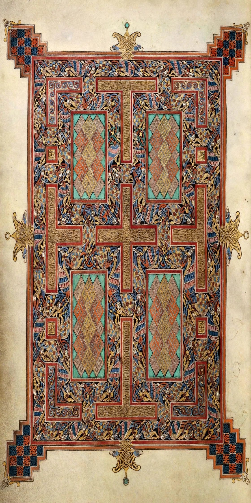

| Date | c. 700–715 AD |
|---|---|
| Place | Lindisfarne, Northumbria |
| Location | British Library, London |
The Lindisfarne Gospels (British Library Cotton MS Nero D.IV) is an illuminated Latin manuscript of the four Gospels, produced around 700–715 on the island of Lindisfarne in Northumbria, in honour of St Cuthbert. It is one of the finest works of Insular art.
Written in insular majuscule on vellum, the book contains evangelist portraits, highly decorated incipit pages, and five surviving carpet pages covered in interlace, spirals and zoomorphic ornament combining Celtic, Germanic and Mediterranean influences. Tradition attributes it to Eadfrith, Bishop of Lindisfarne.
The monks carried the book when Viking raids forced them from Lindisfarne in 875. In the 10th century Aldred added an Old English interlinear gloss — the earliest surviving translation of the Gospels into English. After the Dissolution it passed to the Cotton collection and now the British Library.